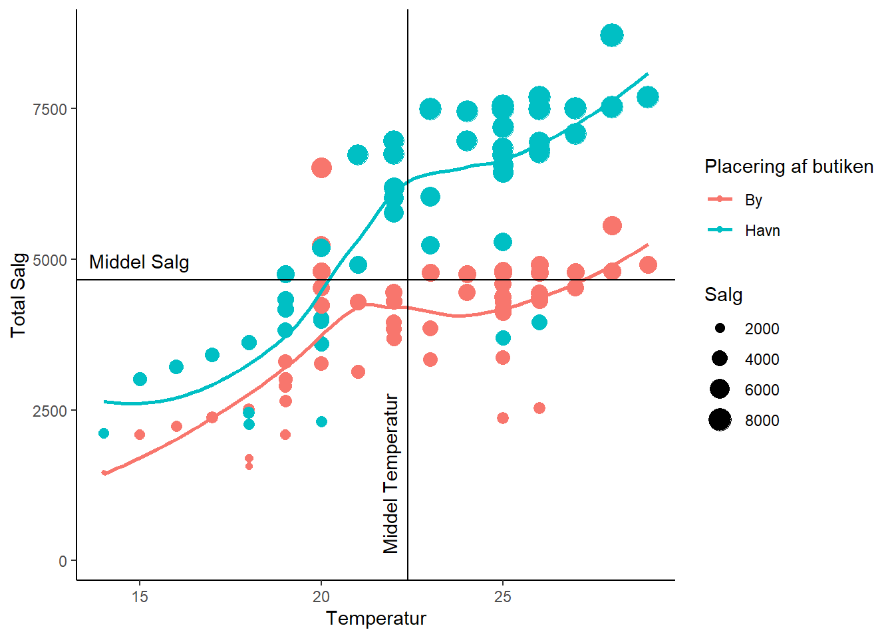

Kapitel 6 Plots
6.1 Standard plot
category <- table(salg$CategoryName)
str(category)
barplot(category[order(category, decreasing = T)])Giver dette plot
6.2 ggplot2
Kode
ggplot(data=issalg) +
geom_point(mapping = aes(x=Temperatur, y=Salg, color=Butik_Placering, size=Salg)) +
geom_smooth(mapping = aes(x=Temperatur, y=Salg, color=Butik_Placering), se=FALSE) +
geom_hline(yintercept = mean(issalg$Salg)) +
geom_vline(xintercept = mean(issalg$Temperatur)) +
annotate("text", label="Middel temperatur", y=1, x=mean(issalg$Temperatur+4)) +
theme(panel.background = element_blank()) +
theme(plot.background = element_blank()) +
scale_x_continuous(name="Temperatur") +
scale_y_continuous(name="Total Salg") +
scale_color_discrete(name="Placering af butiken") +
scale_size_continuous(name="Salg")Giver dette plot
## Warning: package 'ggplot2' was built under R version 3.6.3## `geom_smooth()` using method = 'loess' and formula 'y ~ x'